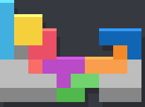
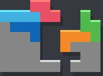
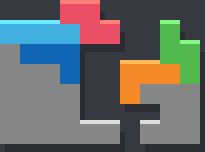

back to homepage
SDPC funni extension
TSS - TSD - TSS - (TSD - TSS) or TST

about opener
This extension invented by WeirdBoi is an extension to the ufopener or weirdspin.
bag 1
Regular SDPC...
bag 2

ufopener extension
 

weirdspin extension
opener in action